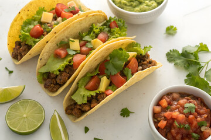

Ingredients
- 4 small corn tortillas
- 1/2 cup black beans (cooked)
- 1/2 avocado (sliced)
- 1/2 cup corn (boiled or roasted)
- Chopped onion and tomato
- Lime wedges
- Hot sauce or salsa
- Fresh cilantro
Instructions
- Warm the tortillas in a pan or microwave.
- Fill each with black beans, corn, tomato, onion, and avocado.
- Drizzle with lime juice and hot sauce.
- Garnish with cilantro and serve immediately.